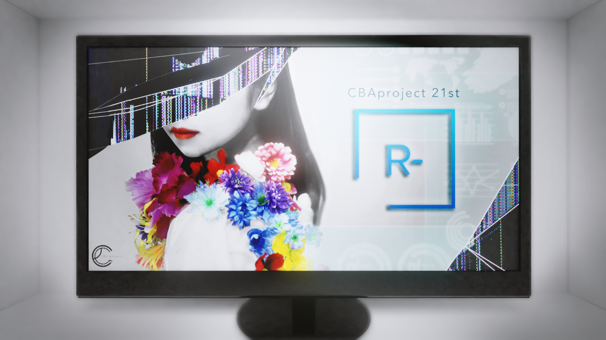
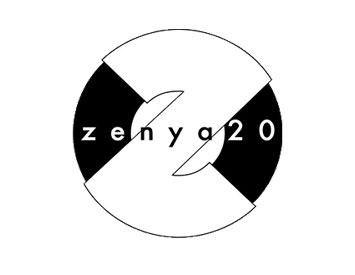
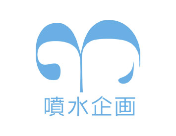
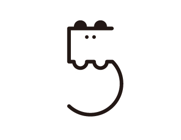
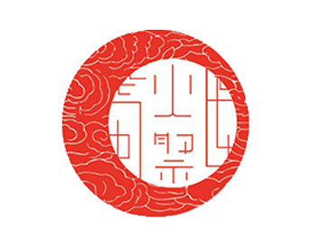
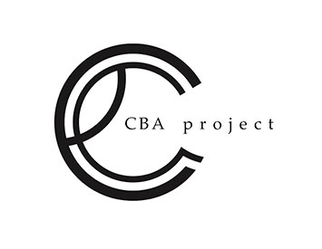
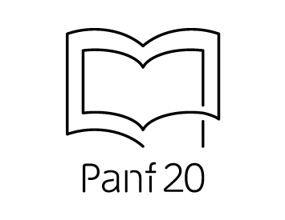
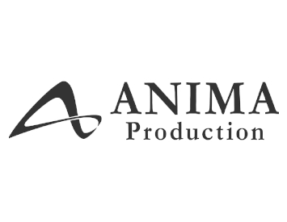

ホーム
芸工祭とは
学祭企画
教室企画
お問い合わせ
HOME
Menu
・ホーム
芸工祭とは
学祭企画
・イベント
テント企画
教室企画
イベント日程
・ご案内
企画団体の方へ
ご視聴の方へ
お問い合わせ
リンク
PP・免責等
CBA
fashion

テーマ
CBAprojectは、芸術工学部の有志で0から全てを作り上げる、ファッションショーエンターテイメント集団です。
今年のテーマは「R-」。この時代だからこそ生まれる、新しく魅力的なファッションショー体験をぜひお楽しみください。
スケジュール
11.15
(Sun)
12:00
〜 第１回公演
13:00
〜 第２回公演
企画総指揮の挨拶は２回目の公演終了後に行います。
閲覧方法
閲覧は無料です。
時間になりましたら以下からご覧いただけます。
アンケート
公演後アンケートにご協力ください。
アンケートに回答
Google フォームに移動します。
コメント欄
感想を送信できます。
Twitter
Facebook
コメントを
非
表示
保護者として、本当に感動しております。まだ1年生で諸先輩がたにご指導頂き感謝しております。来年は、目の前で見学を出来たら、幸いですが、本当に、感動しました。カッコよかったです。
Very well produced and creative. There was a great amount of thought in every garment, music, lights & staging. Even with the pandemic, they found a way to provide a cohesive, high-quality production.
ファッション、映像、音楽、照明、ステージング等、全てにおいてレベルが高いことに驚きました。芸術工学の要素が全部詰め込まれた素晴らしいショーだと思いました。来年もぜひネットで見せてください！
超レベル高いですね！すごい！！！テーマも今にフィットしているように感じました。
めっっっちゃかっこよかったです…！
本当にかっこよかった！みんな最高～～～！
コメントは承認制のため、表示に時間がかかることがあります。詳しくは
こちら
をご覧ください。
学祭企画

zenya

３研

５研

火祭
２研

CBA
今見ています

Panf
教室企画

ANIMA


コメント欄